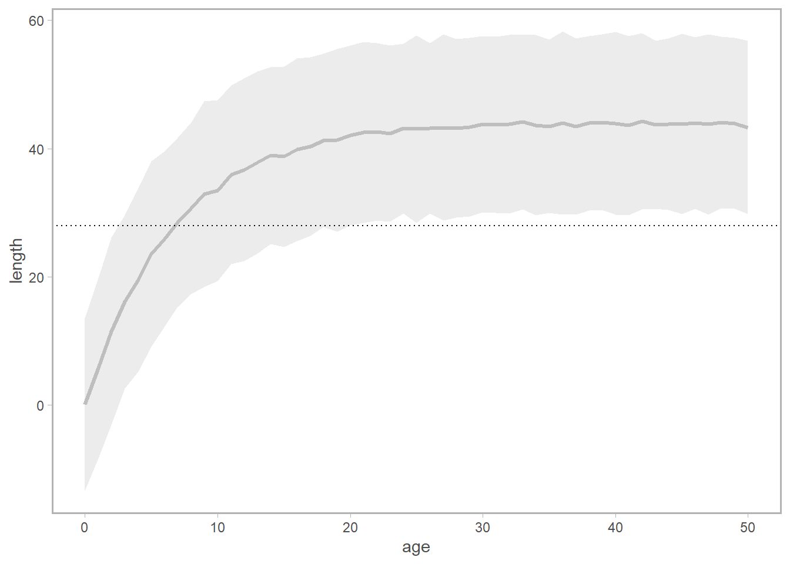
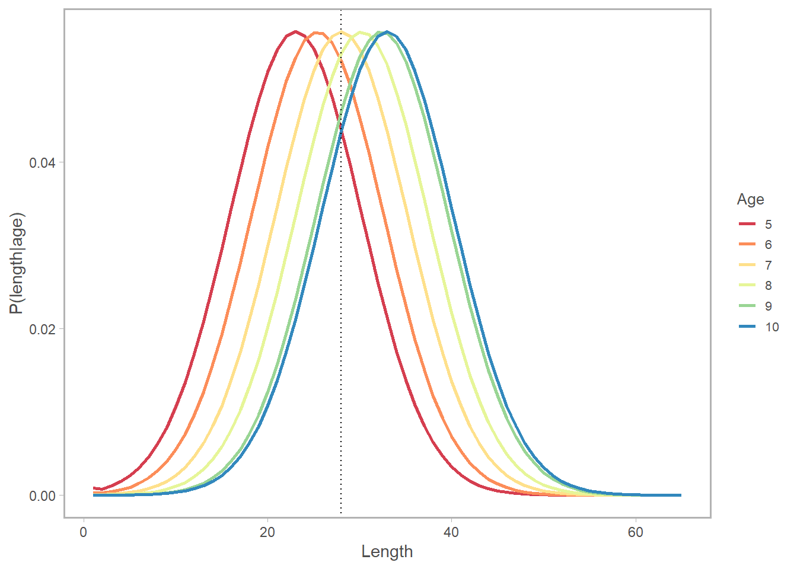

## check out my post "Why do we use ln(19)?" for more info on this syntax:
logistic <- function(bin, b50, b75){
selage <- 1/(1+exp(-(log(15))*(bin-b50)/(b75-b50)))
return(selage)
}
age_bins <- 0:50
length_bins <- 1:65
sigma_length <- 7.16
## a logistic, length-based selectivity curve
length_selex <- sapply(length_bins, logistic, b50 = 30, b75 = 52)Length-based Processes in an Age-Structured Model
This is in the category of “stuff I thought I understood” until I didn’t.
Let’s say you have an age-based model with integer-year bins a thru A+. The model is going to keep track of the dynamics of the fish population as they step through each age, but (annoyingly, perhaps) some of your modeled processes are length-based. This can occur when you are working with lots of different fleets, for which gear selectivity is better specified by length, or even the simple inclusion of our favorite \(w_{l} = a l^b\) calculation, which will require a notion of a fish length-at-age to play nicely within an age-structured model.
Converting these length-based estimates (or quantities) into age-based estimates introduces a problem because of uncertainty in length-at-age, in other words, the fact that fish of length \(l\) could be of various ages \(a\). Let’s make up some data:
Here’s our selectivity curve; there’s a vertical line at l = 28cm which we’ll use for reference throughout this post.
So let’s say we’re interested in the selectivity at l = 28cm. In a length-based population dynamics model, we’d be set to just return the selectivity at l = 28cm for any fish within that respective bin (in 1-cm bins, fish lengths greater than 27cm and less than or equal to 28cm would all be assigned this value.)
However, in an age-based model, we are instead interested in translating this curve into the expected selectivity-at-age. And given age \(a\), a fish could be a broad range of lengths \(l\), making it less clear which value we would “read off” the blue curve above. This variation is caused by the variable \(\sigma\), which I’ve set at ~7cm – this reflects the standard deviation in length-at-age for our stock.
Here’s how it looks in practice. First, we can generate our vonB-based expected length-at-age (here I assume \(t_0\) is 0, and am plotting the observed variation for 500 datasets, which should approximate the value for sigma_length specified above).
vonb <- function(age, linf, kappa, sigma_length){
len <- linf*(1-exp(-kappa*(age)))+rnorm(1,0,sigma_length)
}
## simulate some datasets
length_at_age = matrix(NA, nrow = length(age_bins), ncol = 500)
for(i in 1:500){
length_at_age[,i] <- sapply(age_bins, vonb, linf = 44,
kappa = 0.15, sigma_length)
}
length_at_age <- bind_cols(age = age_bins,
meanL = rowMeans(data.frame(length_at_age)),
sdL = apply(data.frame(length_at_age),1,sd))%>%
mutate(lci = meanL-1.96*sdL, uci = meanL+1.96*sdL)
ggplot(length_at_age,
aes(x = age_bins)) +
geom_line(lwd = 1.1, col = 'grey', aes(y = meanL)) +
geom_ribbon(aes(ymin = lci, ymax = uci), fill = alpha('grey',0.3))+
geom_hline(yintercept = 28, linetype = 'dotted')+
labs(x = 'age', y= 'length')
Notice how the horizontal line at 28cm corresponds to multiple ages within the confidence interval? How do we account for the fact that there is a chance that the the selectivity applicable to a given age can be characterized by the selectivity at several lengths, and how do we weight the applicability of that selectivity value given what we know about growth? Enter \(\psi_{l,a}\), the probability of being in length bin \(l\) at age \(a\), a.k.a. the normal distribution \(\phi\) of size-at-age.
\[ \begin{align} \psi_{al} &= \begin{array} & \Phi (1,\tilde l_{a}, \sigma)) & if \space l = 0cm \\ \Phi (l+1,\tilde l_{a}, \sigma)) - \Phi (l,\tilde l, \sigma))& if \space 0cm, < l < L+ \\ 1-\Phi (l,\tilde l_{a}, \sigma)) & if \space l = L+\\ \end{array} \end{align} \]
Where \(l\) is the length bin in question, \(\tilde l\) is the observed length-at-age, and \(\sigma\) is the variation in growth. If we simply used a “lookup” method (which I have certainly done in a pinch!), and assigned the selectivity at age \(a\) to the selectivity at the expected length at age \(a\), we’d be introducing bias.
## this function returns the distribution of expected length-at-age
## given a bin and observed length-at-age
getP_al <- function(len_bin, len_obs, length_sigma){
pal = NA
if(len_bin == 1){
pal <- pnorm(len_bin, len_obs, length_sigma)
} else if (len_bin > min(length_bins) & len_bin < max(length_bins)){
pal <- pnorm(len_bin+1, len_obs, length_sigma) -
pnorm(len_bin, len_obs, length_sigma)
} else{
pal <- 1-pnorm(len_bin, len_obs, length_sigma)
}
pal
}
PAL <- matrix(NA, nrow = length(age_bins), ncol = length(length_bins))
for(a in age_bins){
for(l in length_bins){
## instead of using means, could re-do vonB with error turned off
PAL[a,l] <- getP_al(len_bin=l,len_obs=length_at_age$meanL[a],sigma_length )
}
}
longPal <- data.frame(PAL) %>%
mutate(age_bins) %>%
reshape2::melt(id = 'age_bins') %>%
mutate(len =as.numeric(gsub("X","",variable))) Here’s a subset of what \(\psi_{al}\) looks like for ages 5-10. Notice (again) how length = 28cm crosses multiple age curves. The good news is, \(\psi_{al}\) has given us a sense of the relative probability of being age \(a\) given length \(l\). (It looks like \(l = 28cm\) is most likely a fish of age 7 or 8).

To put this all together, we need to compute the dot-product of the selectivity-at-length and the expected distribution of length-at-age.
In math, we’re doing this: \[ Sel_a = \sum_l Sel_l \cdot \psi_{al} \]
Which is really just a cheap way of approximating the correct estimator of the expected selectivity of an animal at age \(a\):
\[ Sel_a = \int_L Sel_L \psi_{aL} dL \]
In words: for each length bin \(l\), multiply the selectivity at that length times the probability of being at age \(a\) given length \(l\). Sum these quantities across all length bins for each age bin.
In pictures: let’s say we are interested in \(a = 5\). We are going to multiply each point on the length-selectivity by its corresponding point (by color and ID number) on the probability of length-at-age-5 plot, then sum the results.
In code (still using \(a = 5\) as an example):
sel_age <- merge(longPal,data.frame(cbind(length_selex,length_bins)),
by.x = 'len', by.y = 'length_bins') %>%
## inner product for each age-length combo
mutate(prod1 = length_selex*value) %>%
group_by(age_bins, len) %>%
summarise(dotProd = sum(prod1)) %>%
ungroup() %>%
group_by(age_bins) %>%
summarise(dotProdsum = sum(dotProd))
ggplot(sel_age,
aes(x = age_bins, y = dotProdsum)) +
geom_line(lwd = 1.1, col = 'grey22') +
labs(x = 'age', y= 'proportion selected',
main = 'Converted from length-at-age')